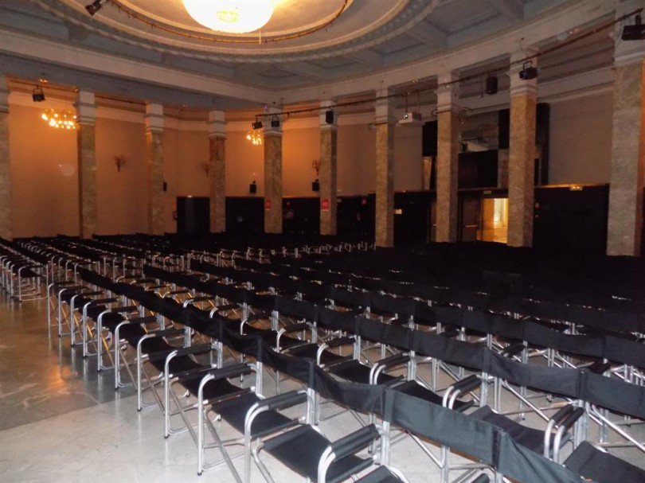
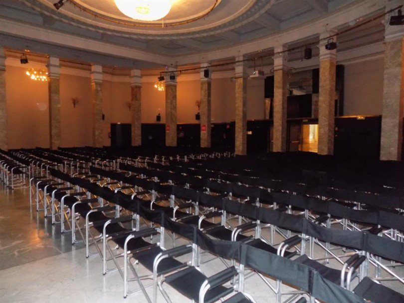
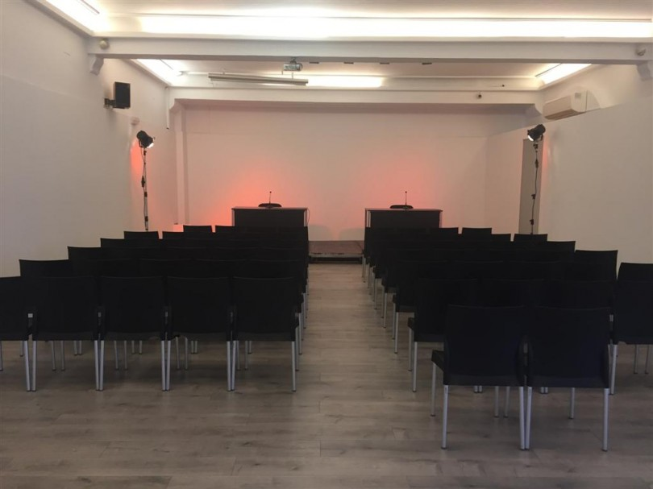
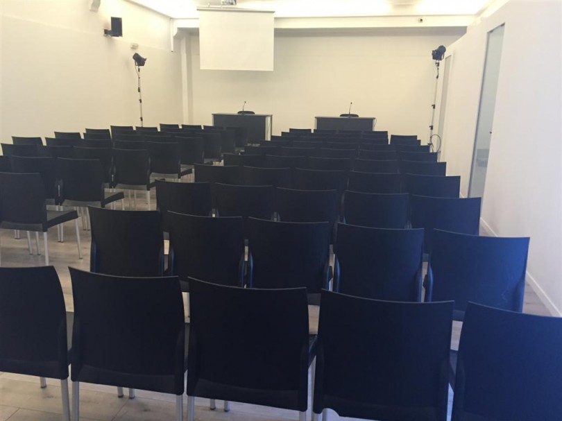

ICSME 2018 will be held at the beautiful Círculo de Bellas Artes de Madrid (Calle de Alcalá, 42), a cultural center located in the heart of the city's historic center where young Picasso attended as a pupil to his painting classes. The entrance to the Círculo de Bellas Artes is through the Calle de Marqués de Riera side street.
The activities of the main conference will take place in the fourth floor. In particular:
Plenary sessions will take place in the fantastic Sala de Columnas.
 

Parallel sessions will be in the Sala Antonio Palacios.
 
The local airport, Madrid-Barajas, has direct connections to major European and other hubs. From there to the venue, you have several options:
The Metro de Madrid is fast, safe and tidy. Banco de España (at the Plaza de Cibeles), the nearest stop, is served by metro line 2 (red). Having a Metro Map (PDF) of the whole Madrid Metro network is usually very convenient (they can also be obtained on paper in almost any metro station). A Tourist Version of the Metro Map (PDF) is available as well. If you do not stay close to the conference venue, it may be interesting to buy a 10-ride ticket. See Season tickets and discounted fares.
Bus stops (and bus lines) nearby: